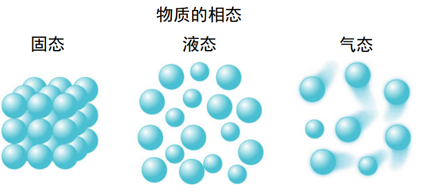

第 1 章 绪论
摘要：本章介绍了认识物质的宏观方法，并定义了热力学系统及其与外界的交换。本章提出了状态变量：温度和压力，并通过理想气体状态方程将其联系起来。
关键词：分压·温度·理想气体定律·热力学系统
热力学是一门扎根于物理学、化学和工程学的科学学科，它对宇宙以及生物学、地球科学和天文学有着深远的影响。热力学描述了物质在宏观尺度上的行为，规定了能量从一种形式转换为另一种形式的规则，和过程的方向。工程师和物理学家应用热力学来关注能量转换和守恒，以开发高效的发动机、冰箱或热泵。化学家则利用热力学研究化学反应和相平衡。热力学对于理解许多地球科学过程至关重要，包括空气的绝热压缩（焚风）、气团膨胀引起的气温递减率、地球内部的地温梯度、压力对冰点和沸点的影响、大气环流的强度、矿物在不同压力、温度和成分下的稳定性、海洋沉积物中的条带状铁建造（BIFs）以及生物地球化学循环的演变。
热力学是一门研究宏观世界的科学，这种宏观尺度即人类，或更大的尺度。大多数热力学概念的提出和理解，不需要对分子结构的深入了解。然而，如果借助对单个分子性质的理解，某些概念会更易于理解。
热力学建立在几个基本定理的基础上，这些定理是通过多年的观察和巧妙实验，结合理论的演绎得出的。大多数热力学教材呈现了四条定律，而工程学中通常仅限于讨论第一和第二定律。第一定律是能量守恒定律：能量可以从一种形式转换为另一种形式，但总的来说，能量既不会丧失，也不会增加。第二定律涉及自发变化，指出能量总体上会随着时间推移而不断分散。换一种表述方式，第二定律表明，自发过程是那些增加宇宙中熵的过程。熵这一术语将在后文中介绍并解释。
1.1 大世界，小原子
化学家研究原子、离子和分子，旨在通过原子层面的知识解释物质的性质并预测化合物的合成。虽然热力学是化学学术课程中的核心内容，但它关注的是宏观系统，即大量物质，而非少数分子。物质存在三种相态：固态、液态和气态，它们在单位体积内粒子（原子、分子、离子）的数量、粒子之间的距离与相互作用以及其空间排列和分布上存在差异（见图1.1）。

图 1.1 最常见的三种物质相态：固态、液态和气态
在气体中，分子之间距离遥远，在空间中随机运动。因此，气体是均匀的、流动的且可压缩的。此外，对于理想气体，粒子的性质和相互作用在宏观层面上可以忽略不计。液体中，粒子彼此靠近，但可相对自由移动，因此液体是流体，但可压缩性较低。而在固体中，组成的原子、离子或分子通常彼此接近并处于固定位置。此外，粒子的性质决定了固体的物理和化学特性。
单质，即具有均匀且明确化学成分的物质，可根据外部条件（温度、压力）的差异以固态、液态或气态形式存在。例如，在地球表面，H2O（水）可能以固体（冰）、液体（水）或气体（水蒸气）的形式存在。同一相态中可能包含多种物质，例如空气由氮气、氧气、二氧化碳等组成。 热力学理论具有普适性，适用于固态、液态和气态。然而，大多数热力学理论是基于气体的行为讨论而来的。设想一个充满气体的容器，气体对容器壁施加压力，这可以通过随机运动的粒子与壁面的碰撞来理解。碰撞的结果在壁面上产生一个垂直的力。因此，气体压力（p）定义为：
$$ p=\frac{F}{A}\tag{1.1} $$
其中，F 为力（单位：牛顿，N），A 为面积（单位：平方米，m²）。气体中的压力在所有方向上均等，因此它是一个标量。压力的单位为 N/m² 或帕斯卡（Pa，国际单位制单位），但通常还使用其他单位（见表1.1）。
单位 |
换算关系 |
|---|---|
1 Pa |
1 N·m⁻² |
1 巴（bar） |
10⁵ Pa |
1 毫米汞柱（mm Hg） |
133.32 Pa |
1 托（torricille or torr） |
133.32 Pa |
1 个大气压（atm） |
101.325 Pa |
表 1.1 压力单位与其对照国际标准单位Pa的换算关系
由于气体分子之间存在大量空间（见图1.1），且相互作用存在限制，因此不同成分的气体能够很好地混合。如果气体之间没有发生反应，气体混合物的总压力是混合物中各成分气体的分压之和。某气体 A 的分压（partial pressure）（pA）是指当气体混合物中的某一种组分在相同的温度下占据气体混合物相同的体积时该组分所形成的压力。道尔顿定律（Dalton’s Law）表明，对于气体 A、B、C 的混合物，总压力ptot为各气体分压的总和。
$$ p_\mathrm{tot}=p_\mathrm{A}+p_\mathrm{B}+p_\mathrm{C}\tag{1.2} $$
例如，对于空气（78% N2，21% O2）总压力为1个大气压时，氮气和氧气的分压分别为0.78个大气压和0.21个大气压。
气体中自由运动的粒子具有动能。温度可用来衡量每个粒子平均具有的动能。当其他条件相同时，温度越高，系统具有的能量越多。温度本身并非能量的形式，而是一种可测量的参数，用于比较不同系统能量的大小。随着温度的升高，大多数固体、液体和气体的体积近似线性膨胀，因为温度影响粒子的动能。液体如水银和酒精的膨胀常用于测量温度，并以水的冰点（0）和沸点（100）为基准进行校准。这种摄氏温标已被基于水三相点（0.01 °C，详见4.3节）的与其密切相关的摄氏温标取代。在水的冰、液态水和水蒸气处于平衡时，定义了此三相点。尽管摄氏温标广泛使用，但它是相对的，是基于水及其宏观相态定义的。
热力学中运用的绝对温标与所用温度计的物质无关，其对应的温度最低也不会低于热力学第三定律所规定的最低温度 -273.15 °C。绝对温标或开尔文温标以 K 表示（无度数符号）。摄氏温度与开尔文温度的关系为：
$$ K=\celsius+273.15\tag{1.3} $$
在热力学中应使用此开尔文温标。
定义了压力（p）和温度（T）后，我们可以定义两个参考状态：标准温度和压力（STP）指压力为 1 bar，温度为 273.15 K（0.0 °C）；标准环境温度和压力（SATP）指温度为 298.15 K（25 °C），压力为 1 bar（1 bar = 105 Pa）。